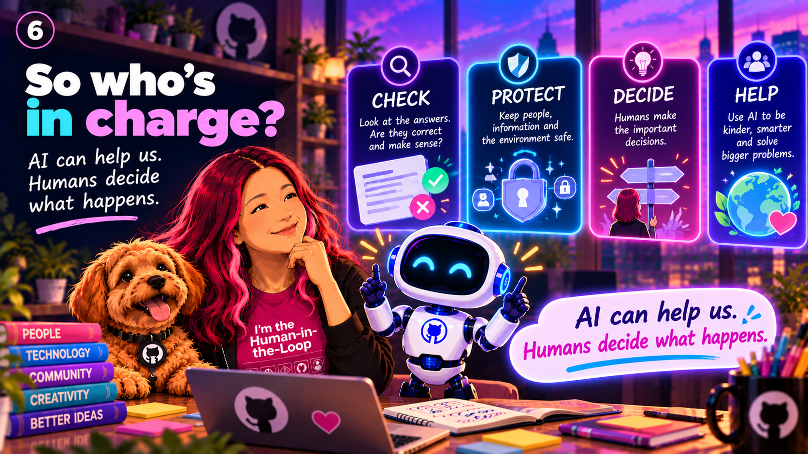

Chapter 08 / 17
Who is in charge?
AI can offer suggestions, but people decide which goals matter and must take responsibility for important outcomes.
A tool, not a boss
An AI tool may help compare options or find patterns. It cannot decide what is fair or safe for everyone on its own.
Make room for a human
For decisions affecting someone's life, people should be able to question a result, explain their situation, and ask for a review.